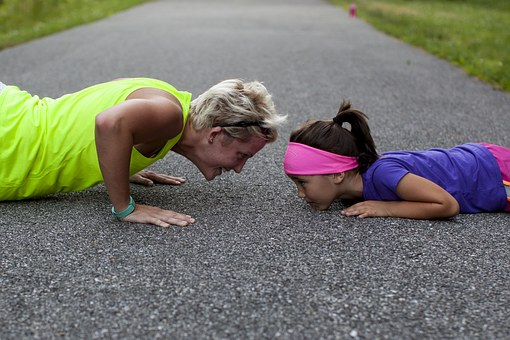

1. 푸쉬업 팔굽혀펴기 또는 푸쉬업(영어: push-up, press-up, floor-dip)은 대표적인 근력 운동 중 하나이다. 일반적으로 기구 등을 사용하지 않고 할 수 있는 운동으로, 엎드린 상태에서 전신의 체중을 두 손과 두 발가락의 4개소에 집중하여 양팔을 늘리는 힘에 의해 신체를 올린다. 동작과 팔꿈치 관절을 굽혀 몸을 지상에 붙지 않을 정도까지 낮추고, 반복하는 것이 기본적인 방법이다. 